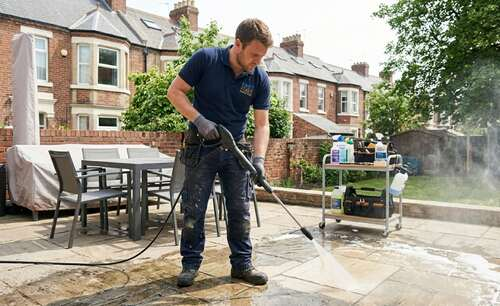

Curățenie profundă în interior, spălare puternică a teraselor și curățare a curții. Servim Cluj-Napoca, Cluj-Napoca, Cluj-Napoca, Cluj-Napoca și întreaga zonă Cluj și împrejurimile sale.

Fie că pregătești o locuință pentru închiriere, vânzare sau doar vrei o casă impecabilă, serviciul nostru integrat de curățenie interior și întreținere curte oferă o soluție completă fără a apela la mai mulți furnizori.
Folosim soluții cu impact redus și echipamente moderne care protejează aerul din locuință și mediul înconjurător, fără a compromite puterea de curățare.
Trimite-ne fotografii cu zonele care trebuie curățate pe WhatsApp și îți trimitem rapid o estimare transparentă.
Trimite mesaj acum